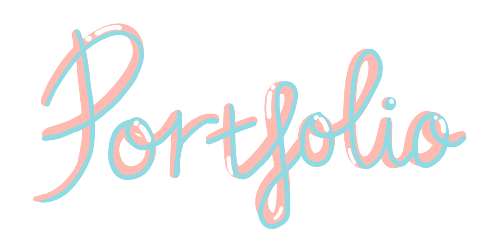
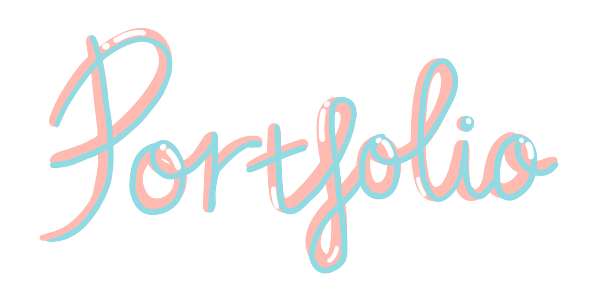

About
This is a part of a project made for an assignment for RMIT University (Bachelor of Digital Media). The brief is to create a digital artwork with theme of my choice. I decided to create a video contained of short videos that I filmed a long time ago combined with 3D elements like TV to portray a broken love.
Process


Inspired by the title ‘Ten Thousand Light-years From Home’ by James Tiptree, I made this artwork with the idea of longevity of love in space and time.
To make this works, I used some of my video clips I filmed with my friends, edited its colors in Premiere Pro, and export it to Unity. Then I took the 3D retro TV design in Google Poly and put it in space Skybox and scripted it so it floated around. Then, I duplicated it and put the videos on each of the TV.
An overall outcome is a group of TV lined to heart shape slowly getting swallowed by a black hole. Each TV screen shows videos of couples in love and broke up repeatedly.
Does eternal love exist? Will love still last despite being 10 thousand light-years (9.460731e+16km) apart? Or will it be swallowed by the black hole and disappear?
In the space where nothing exists, memories of love are still there in a digital form showing on an old TV. Love might no longer exist in them (the couple in the video) anymore, but evidence of their love is still there and will be eternally stored in space. From this work, I want people to understand that love might not last forever but the love we have done exists and will forever exist in our memories and that we should treasure all the beautiful memories of being loved, rather than just sad memories of breaking up.